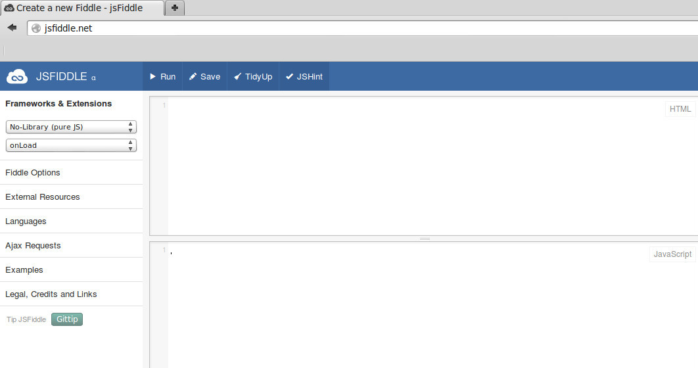

Nous allons nous intéresser à un acteur fondamental du développement web, le couple HTML+CSS (Hyper Text Markup Langage et Cascading Style Sheets).
Dans cette activité, nous allons exclusivement nous intéresser au HTML. Qu'est-ce que le HTML, voici la définition que nous en donne Wikipedia :
L’Hypertext Markup Language, généralement abrégé HTML, est le format de données conçu pour représenter les pages web. C’est un langage de balisage permettant d’écrire de l’hypertexte, d’où son nom. HTML permet également de structurer sémantiquement et de mettre en forme le contenu des pages, d’inclure des ressources multimédias dont des images, des formulaires de saisie, et des programmes informatiques. Il permet de créer des documents interopérables avec des équipements très variés de manière conforme aux exigences de l’accessibilité du web. Il est souvent utilisé conjointement avec des langages de programmation (JavaScript) et des formats de présentation (feuilles de style en cascade).
Pour l'instant, nous allons retenir deux éléments de cette définition «conçu pour représenter les pages web» et «un langage de balisage».
Grâce au HTML vous allez pouvoir, dans votre navigateur (Firefox, Chrome, Opera,....), afficher du texte, afficher des images, proposer des hyperliens (liens vers d'autres pages web), afficher des formulaires et même maintenant afficher des vidéos (grâce à la dernière version du HTML, l'HTML5).
HTML n'est pas un langage de programmation (comme le JavaScript par exemple), ici, pas question de conditions, de boucles....c'est un langage de description.
Pour aborder le HTML, nous allons, dans un premier temps utiliser le site jsfiddle.net.
Après avoir lancé le navigateur Firefox, taper http://jsfiddle.net/ dans la barre d'adresse.
Vous devriez voir apparaître ceci :
Nous allons pour l'instant uniquement utiliser la fenêtre « HTML » et la fenêtre « Result ».
Écrivez le code HTML suivant :
<h1>Hello World! Ceci est un titre</h1>
<p>Ceci est un <strong>paragraphe</strong>. Avez-vous bien compris ?</p>
Qu'est-ce qui s'affiche dans la fenêtre ?
Comme déjà évoqué ci-dessus, en HTML tout est une histoire de balise que l'on ouvre et que l'on ferme. Une balise ouvrante est de la forme <nom_de_la_balise>, les balises fermantes sont de la forme </nom_de_la_balise>.
En observant attentivement le code, vous devriez forcément remarquer que toute balise ouverte doit être refermée à un moment ou un autre. La balise ouvrante et la balise fermante peuvent être sur la même ligne ou pas, cela n'a aucune espèce d'importance, la seule question à se poser ici est : ai-je bien refermé toutes les balises que j'ai ouvertes ?
Enfin pour terminer avec les généralités sur les balises, il est important de savoir qu'une structure du type :
<balise1>
<balise2>
</balise1>
</balise2>
est interdite, la balise2 a été ouverte après la balise1, elle devra donc être refermée avant la balise1.
En revanche, l'enchaînement suivant est correct :
<balise1>
<balise2>
</balise2>
</balise1>
Notez que dans notre exemple nous respectons bien cette règle « d'imbrication » des balises avec la balise
Il est important de comprendre que chaque balise a une signification qu'il faut bien respecter (on parle de la sémantique des balises). Par exemple le texte situé entre la balise ouvrante et fermante
Vous devez aussi savoir qu'il existe des balises qui sont à la fois ouvrantes et fermantes (
Il est possible d'ajouter des éléments à une balise ouvrante, on parle d'attribut. Une balise peut contenir plusieurs attributs :
Il existe beaucoup d'attributs différents, nous allons nous contenter de 2 exemples avec l'attribut id (id pour identifiant) et class. Nous verrons l’intérêt de ces attributs dans l'activité suivante.
Écrivez le code HTML suivant :
Qu'est-ce qui s'affiche dans la fenêtre ?
À faire vous même 1.2
<h1>Ceci est un titre</h1>
<h2 class="titre_1">Ceci est un sous titre</h2>
<p id="para_1">Ceci est un <strong>paragraphe</strong>. Avez-vous bien compris ?</p>